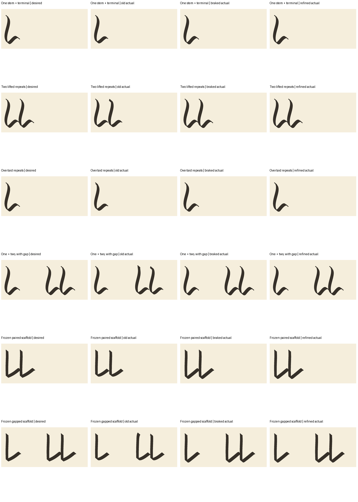

TD-018 / FOUNDATION REPAIR / RUN 003
Clearer strokes. Controlled pen landing.
Why were the old previews pixelated?
The inexpensive evaluation images were rendered at 180 DPI. A 0.45 mm nib is only about 3 pixels wide at that resolution. Enlarging those pixels with nearest-neighbor scaling made them visibly blocky. That was a presentation mistake, not the intended quality of the scribe.
These new presentation images are rerendered from geometric or actual trajectory samples at 900 DPI, then smoothly downsampled when assembled. They are not enlarged or retouched evaluation bitmaps. Evaluation still uses the original 180-DPI criteria; prettier presentation cannot change a gate.
The six existing stroke primitives
Stem, rise, bowl, turn, loop and exit. These are the existing frozen, synthetic-trained families, revalidated under the braking planner—not new training or a complete historical stroke vocabulary.
Why do the comparison marks look like L?
That comparison deliberately repeats one downstroke plus its terminal. We test it alone, repeated with a lift, overlapped and separated by a gap so geometry stays controlled while motion changes. This L-like construction diagnoses pen landing; it is not evidence of an alphabet or a broad set of learned gestures. Old i/u labels were scaffold identifiers, not claims of successful letter learning.

What the braking fix achieves
| Check | Measured result |
|---|---|
| Saved u re-entry speed, base run | About 16.6 mm/s upward before → 0.001221 mm/s after |
| Saved u re-entry position error, base run | 0.0000603 mm, below the 0.05 mm arrival limit |
| Measured arrivals and all refinements | Entry, time, endpoint and mechanics checks pass |
| Original six-primitives baseline | Fresh read-only validation passes; no fitting |
| Ordinary stem-terminal fixtures, base runs | Maximum contact lag 0.0913 mm, below 0.25 mm |
| Saved fitted pair, base run | Sharp-corner lag 0.3710 mm, above 0.25 mm |
| Downstream training admission | Still false |
The pen brakes while lifted, follows a prescribed rest-to-rest air path, and accelerates into the next stroke without resetting position or velocity. Added time is explicitly planned. Speed, acceleration and tool limits are unchanged; no adaptive wait is chosen from rendered results.
Remaining work: plan the sharp corner
The remaining failure occurs during continuous contact at the saved scaffold’s sharp stem-to-exit corner. We should not keep adjusting air travel to hide that different problem. The next proposal is shared, acceleration-aware timing at declared stroke joins and along curved paths, preserving geometry and contact topology. It requires a separately authorized experiment: this follow-up allowed one candidate and no automatic revision.
- Results, budgets and replay commands
- Proposed shared corner-timing scope
- Full gate and per-case results
- All attempts and verification
- Retained pre-braking failure
Historical re-entry plot — run 002, before this fix
This is retained evidence of the old landing problem, not the current result.